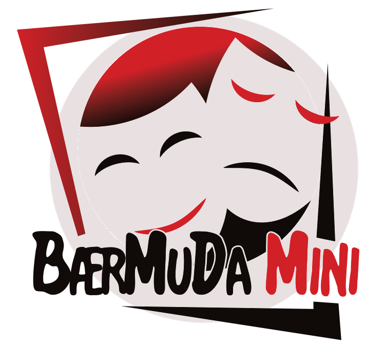
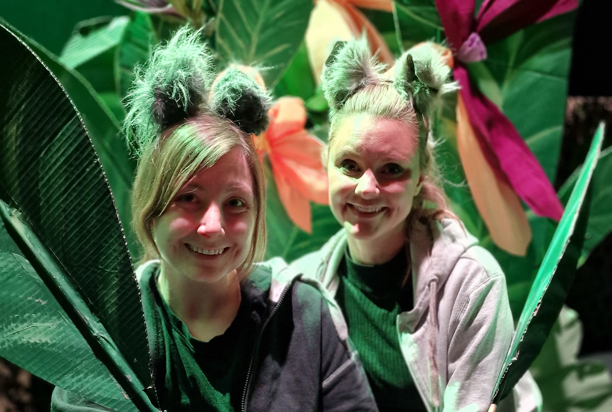
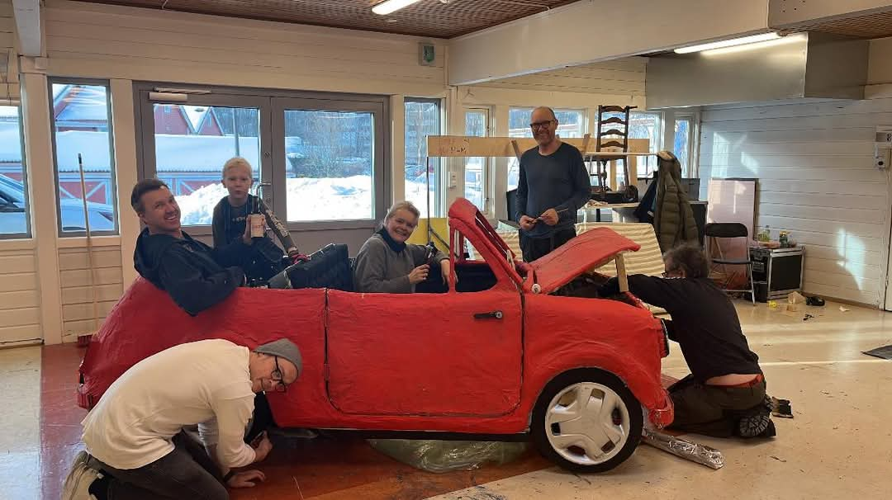
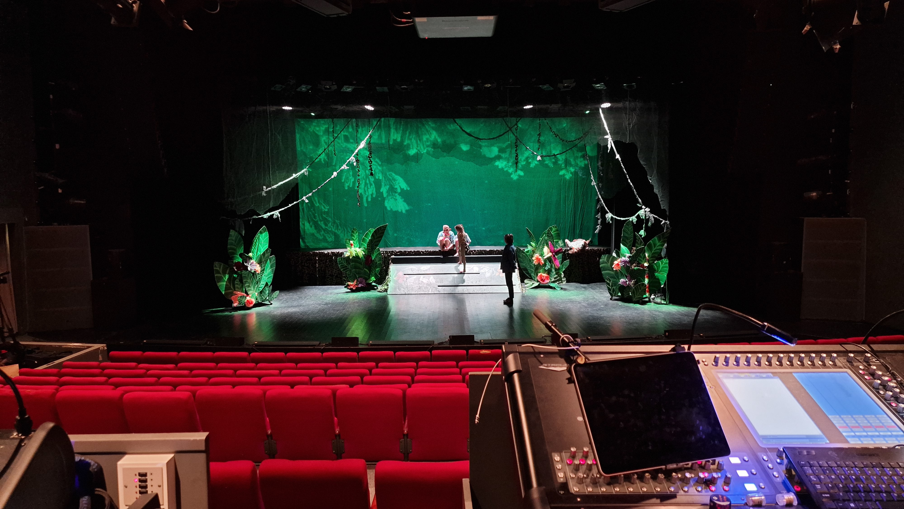
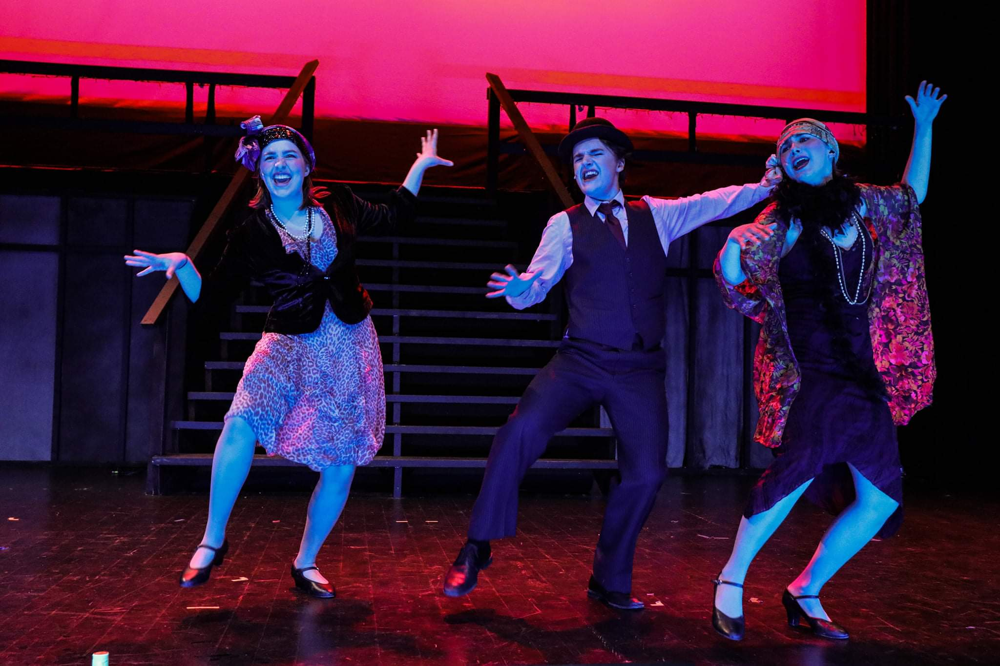
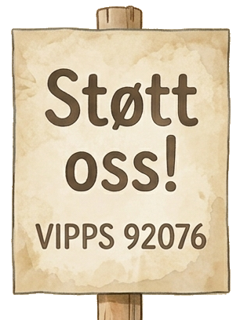

Bærum Musikk og Danseteater Mini
Gruppen ble stiftet i 1997 av medlemmer i Bærum Musikk og Danseteater (BærMuDa). De ønsket å tilby barna sine de samme opplevelsene de hadde.
Gruppen består av ca. 40 barn fra 8 til 19 år.

Gruppen ble stiftet i 1997 av medlemmer i Bærum Musikk og Danseteater (BærMuDa). De ønsket å tilby barna sine de samme opplevelsene de hadde.
Gruppen består av ca. 40 barn fra 8 til 19 år.

Vi har dyktige instruktører som har vært i bransjen i mange år
I teatert stiller vi med levende band og vår kapelmester i flere år har vært og er Helge Sunde

Gruppen er foruten instruktører foreldredrevet. Foreldrene deltar i en av gruppene under:
Det gjennomføres to helger med seminarer hvert år en etter høstferien og en i slutten av januar, her forventes det at foreldrene stiller til dugnad. I tillegg så må man regne med å stille opp under teaterperioden i teateret og møter innimellom. Det variere litt når de enkelte gruppene har mest jobb.

Det gjennomføres en hovedproduksjon i året på vårparten i Sandvika Teater. Her er alle i både ungdomsgruppen og barnegruppen i sving, men det er ungdomsgruppen som er mest på scenen. Barnegruppen har i tillegg en egen mindre juleforestilling på lille scene i Sandvika teater der de får utfolde seg noe mer og lærer å bli trygge på scenen.
Øvelsene foregår på mandager til litt varierende tider i Jar menighetshus.

Ønsker du å prøve deg på scenen?
Vi tar inn nye medlemmer etter hovedproduksjonen på våren og tidlig høst.
Nye medlemmer i ungdomsgruppen (fra året de starter i 7.klasse) må møte på en audition.
For å starte i barnegruppen (fra året de starter i 3.klasse) er det ingen audition.
Det er mange som vil gå på teater så vi har venteliste på å komme inn. Send en mail til oss med navn og årsmodell for å sette deg på venteliste.

Det er dyrt å drive teater selv med mange foreldre som legger ned masse frivillig arbeid. Alt har blitt dyrere mens støtten til kultur og barneteater har stått stille. Støtt arbeidet vårt med barn og unge ved å vippse et beløp, alt hjelper. Takk for støtten!